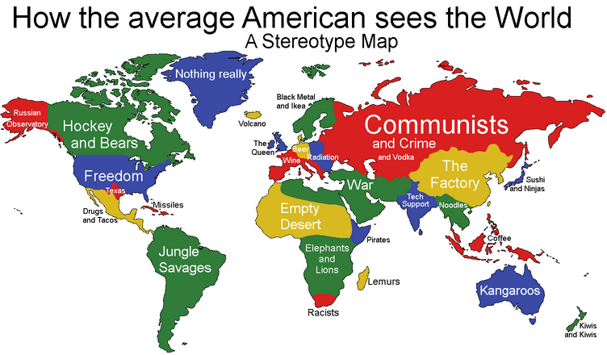

I grew up in Manila, Philippines. My family and I moved to the US when I was 17, and since then it's been a curious experience of navigating race and culture, and figuring out how I fit into all of it.
Truth be told, we had our own stereotypes when I was growing up, not so much in relation to my peers but in relation to people that were truly 'others'--people that we weren't really exposed to or understood (i.e. tribe folk and the like). I mention this to bring home the point that racial stereotypes aren't something I ever really thought about seriously before living here.
Fast-forward to my experience in a junior college in the very small town of Sonora, CA, where all of a sudden I was perceived as a high-achieving asian who was thought to have previously lived in a hut on a farm...wait. WHAT?
I mean, I've always been a bit above average in school, but certainly would never have described myself as 'high-achieving,' and as for the hut on the farm... I mean. I still don't know how I feel about that to this day. Part baffled amusement, part incredulity, perhaps (I grew up in a city 1000x larger than that small town! With proper buildings! o.O ). I guess it's just that I had never thought that I was any kind of a stereotype until that time, and it was just SO WEIRD.
Stereotype threat is defined as 'the threat of being viewed through the lens of a negative stereotype or the fear of doing something that would inadvertently confirm that stereotype.' Reading a few articles on it has encouraged me to think of stereotypes in general from a new perspective.
Thankfully, the stereotypes that I got weren't all that harmful to me. I didn't really let it affect me in the sense that I kind of just went about my day, and kept doing well in school. As for the hut in the farm, I think most people figured out within the first couple of times they spoke to me that I've always been a city girl. Note that the stereotypes I've been given aren't really all that harmful or negative in the larger scale of things, unlike the experience of a lot of other people. In that sense, my experience is certainly not standard.
It's harder to ignore the stereotypes when they're more malicious, when they take a stab at a person's supposed lack of intelligence or morality. I truly can't imagine how horrible and frustrating that might be. But the least I can do is try to be conscious of my approach to other people, and be mindful of my thoughts and expectations of them. I also think it's helpful to remind people of the fallacy of stereotypes when they unthinkingly assign them to other people, or when they think they themselves are falling into one.
(As a final side note, the photo above which I found online has 'coffee' as the Philippines' stereotype to fellow 'Mericans. This just made me laugh because 1) I don't think we grow coffee beans, and 2) even if we did, I am 100% sure that it's not our main agricultural product--that honor would go to either rice or sugarcane.)